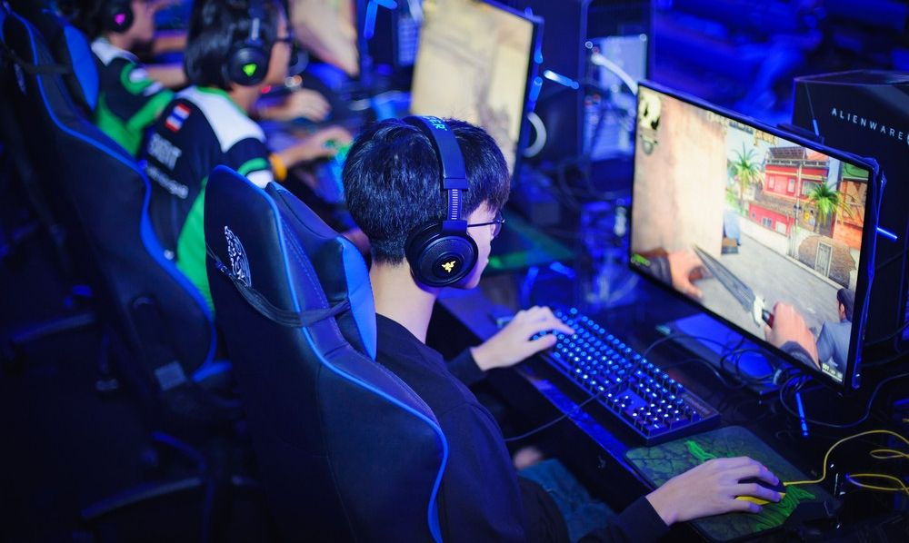
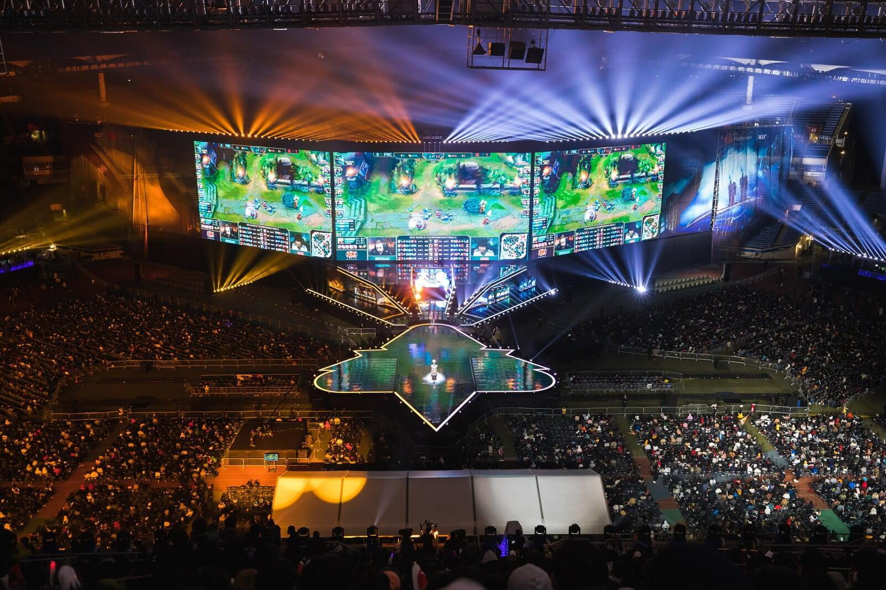
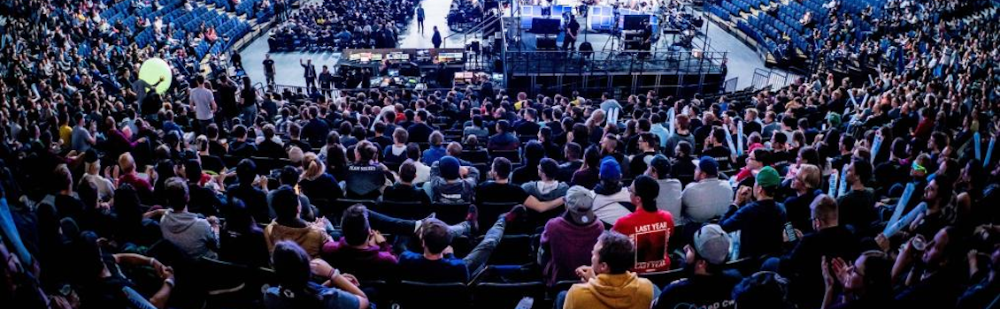

E-sport nabiera coraz większego rozpędu. Właściwie każdy człowiek na ziemi słyszał już o jego fenomenie, a w szkołach zaczęły powstawać nawet klasy o profilu e-sportowym. Scena e-sportowa rośnie obecnie w zastraszającym tempie i nic nie wskazuje na to, by rozwój ten miał się zatrzymać.
 
